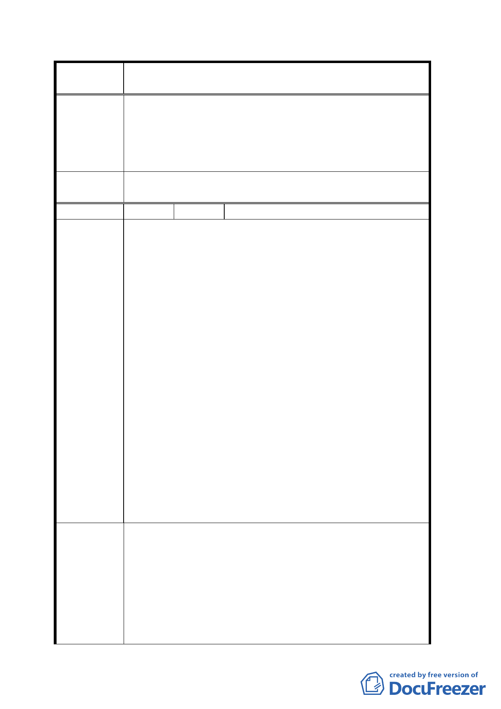

案
名
變更臺北市文山區萬隆段二小段瀝青拌合場用地及住宅區
（專案國宅用地）為學校用地計畫案
聽會，並做成評估報告，並借鏡高雄市「瑞平中學」
設在人口稀少之地點（遠離住宅區）。
二、依照都市計畫法第二十六條及三十四條請參照居民提
供意見，審慎選擇設校地點，則依法辦事，老百姓竭
誠服從。
擬建議處理
意見
同意撤回計畫案。
編 號 ７ 陳情人 林建華
一、萬隆段（原為溪口段）自民國五十九年起，由工業區、
住宅區、機關用地、密改瀝青場（公開展覽為養工處、
工程隊及其必要設施）、機關用地、住宅區，先後已變
更六次，主辦單位違悖都市計畫法多次，其不法變更，
致鄰近居民數十年來，有苦難言，如今移走此公害之
單位，又要設立另一種公害的學校（實際上是感化
院），為防患未然，居民一致反對興建此嫌惡之設施。
二、全市只有「萬隆段」之居民為二等公民，任其宰割三
十年，難道「民主法制」則為虛應百姓、欺騙居民而
陳情理由
便宜行事嗎？民國六十年代市府以「覓地困難」，投資
數千萬元設瀝青拌合場於此段，現在為何要遷出去
呢？因為這是遲來的正義，但以凌虐法制、危害居民
數十寒暑了！市府不思「前車之鑑」，又要為所欲為，
一意孤行，再次宰割萬隆段，作百姓不喜歡的建設嗎？
三、主辦機關「獨斷專行」，不接受居民意見，攏絡里長諸
公，便宜行事，都市計畫局必須嚴格執行都市計畫法，
不能隨意變更住宅區設校。
四、市府教育局原先承諾「通盤檢討」學校，提出詳估資
料在萬隆段再開一次公聽會，亦未真正確實履行，有
黑箱作業之嫌。
一、本年二月四日在萬福活動中心舉行說明會，民意代表
等均一致表示「住宅區設置文心中學」，事前缺乏評
估，資料準備不夠，因而流會。
建議辦法
二、請都市計畫當局或教育局舉辦一次大型公聽會，邀請
都市計畫專家、學者（律師、教授）、有關單位（環保
局、警察局、民意代表等）、新聞媒體，作一次大辯論，
百姓才能心悅誠服。
三、若不願大費周章，則可辦四里里民公投設校。
八